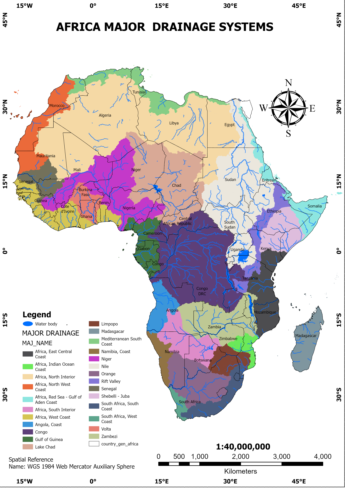
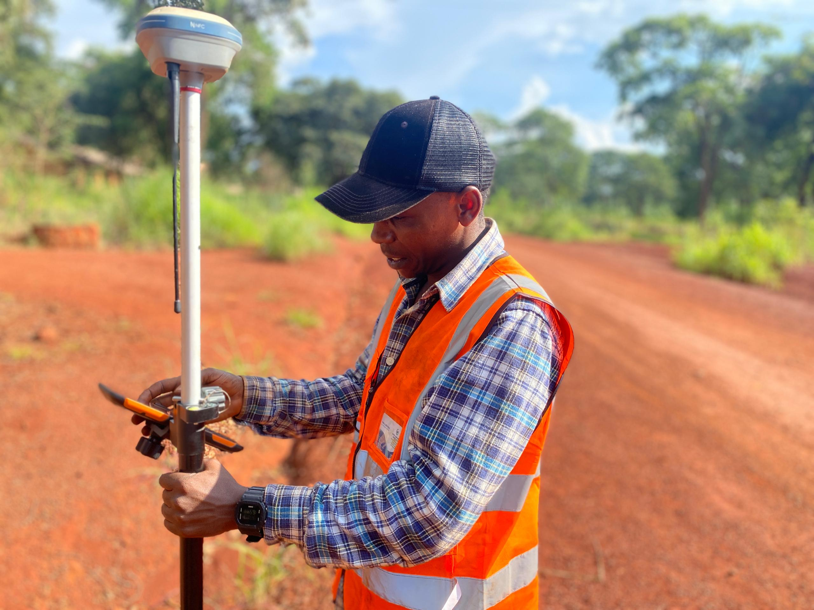
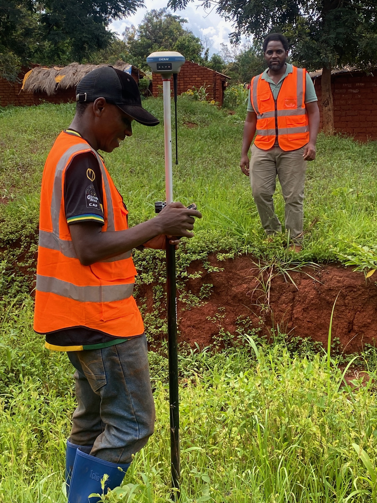
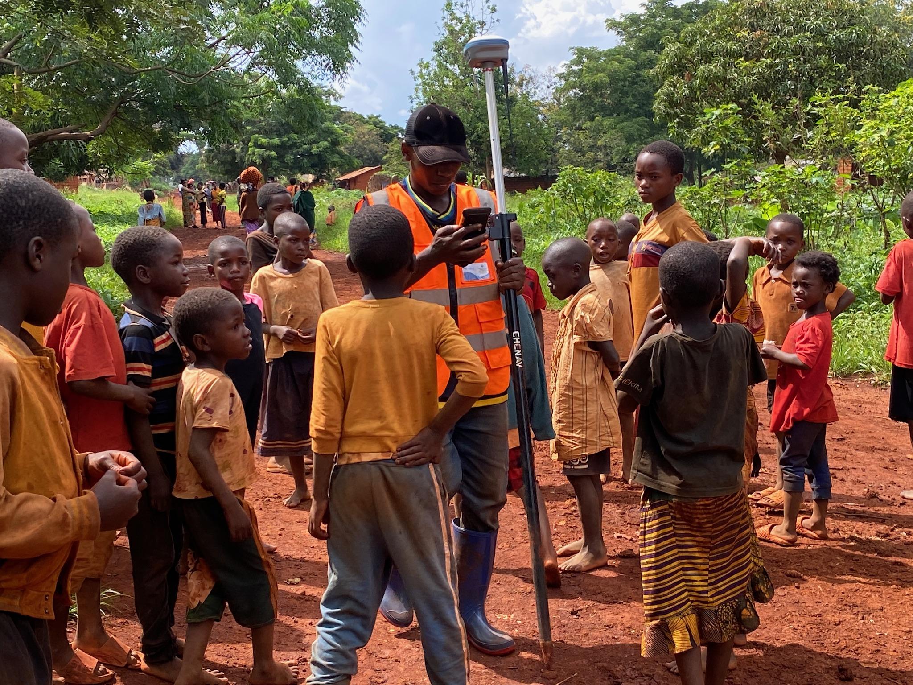
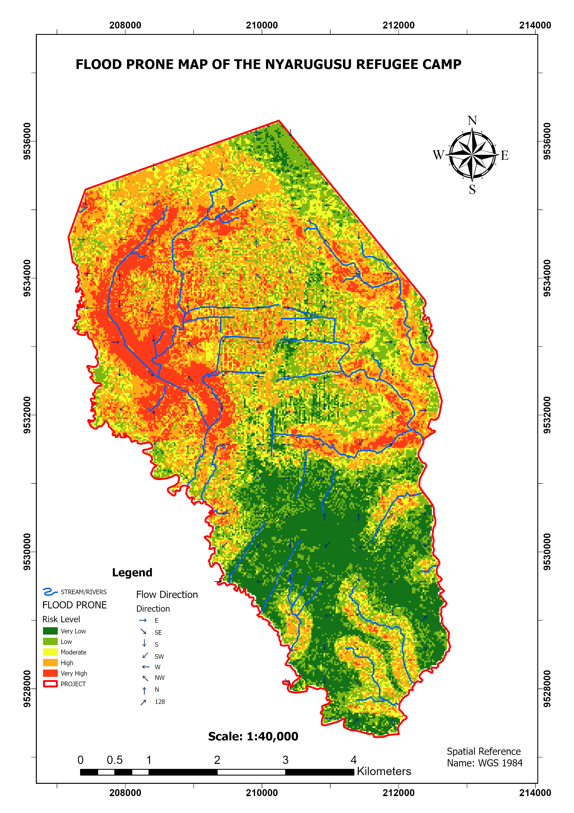

Tanzania Geology Data
Geology spatial dataset for lithology mapping, environmental interpretation, and water resource studies.
Source: Yoel HydroGIS Tanzania shapefile collection.
GIS | Hydrology | Remote Sensing
Professional GIS and Hydrology Hub showcasing advanced spatial analysis, hydrological and hydrogeological modelling, remote sensing applications, and geospatial data solutions.
Pangani field context, Africa-scale spatial interpretation, CN runoff analysis, watershed delineation, and flood-risk mapping.
Professional cartographic layouts and free environmental data distribution for research workflows.
Project Visuals
 Pangani Hydrology Study
Pangani Hydrology Study

Africa GIS Context CN Runoff Analysis
CN Runoff Analysis

Mtendeli Field Mapping
Topographic Surveys
Nyarugusu Field Project
RUSLE GIS Output LULC Mapping Output
Pangani Hydrology Study
Africa GIS Context
CN Runoff Analysis
Mtendeli Field Mapping
Topographic Surveys
Nyarugusu Field Project
RUSLE GIS Output
LULC Mapping Output
LULC Mapping Output
Pangani Hydrology Study
Africa GIS Context
CN Runoff Analysis
Mtendeli Field Mapping
Topographic Surveys
Nyarugusu Field Project
RUSLE GIS Output
LULC Mapping Output
Geospatial Open Data
Download optimized, cleaned GIS datasets ready for mapping tasks and water resource research workflows across Tanzania. Free account registration is required before downloads open.
Geology spatial dataset for lithology mapping, environmental interpretation, and water resource studies.
Source: Yoel HydroGIS Tanzania shapefile collection.
Indian Ocean spatial layer for coastal mapping, basemap context, and Tanzania coastal GIS analysis.
Source: Yoel HydroGIS Tanzania shapefile collection.
Place-name and settlement location data for reference mapping, labels, and spatial orientation across Tanzania.
Source: Yoel HydroGIS Tanzania shapefile collection.
Soil spatial layer for land evaluation, hydrological interpretation, erosion studies, and environmental analysis.
Source: Yoel HydroGIS Tanzania shapefile collection.
River network data for watershed studies, drainage mapping, flood-risk analysis, and hydrological modelling.
Source: Yoel HydroGIS Tanzania shapefile collection.
Surface water features for lakes, reservoirs, wetlands, and water resource mapping workflows.
Source: Yoel HydroGIS Tanzania shapefile collection.
About
Yoeln HdroGIS focuses on engineering spatial analysis, environmental GIS, remote sensing applications, and complex hydrological studies.
The target is to build a premier geospatial and water resources consultancy supporting infrastructure planning and sustainable environmental frameworks.
Portfolio
Field-based geospatial data collection, site documentation, and environmental mapping support for project workflows.
Survey support, terrain interpretation, mapping control, and GIS-ready field observations for technical planning.
Community-scale spatial observation, project documentation, and field mapping outputs for environmental studies.
LinkedIn Highlights
Selected public posts from Yoel Ngusulu's LinkedIn profile, highlighting GIS, remote sensing, hydrology, and environmental mapping work.
A public LinkedIn post showing DEM processing for Dar es Salaam using the GEE JavaScript API, custom elevation visualization, clipping, and export workflows.
View on LinkedIn →
A public LinkedIn post presenting LULC analysis using Landsat 8, NDVI classification, ArcGIS Pro map production, and environmental management insights.
View on LinkedIn →Contact
Available for GIS analysis, hydrological studies, mapping projects, environmental spatial analysis, and geospatial consultancy.